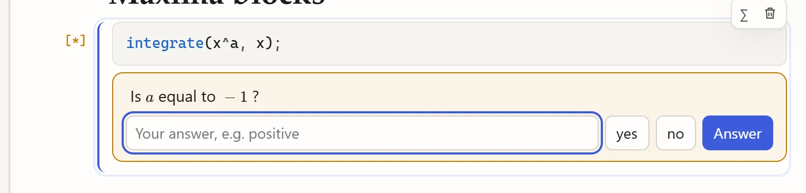
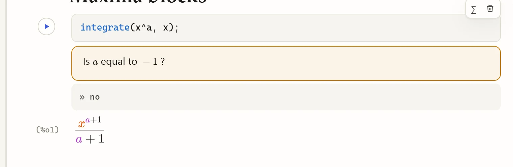
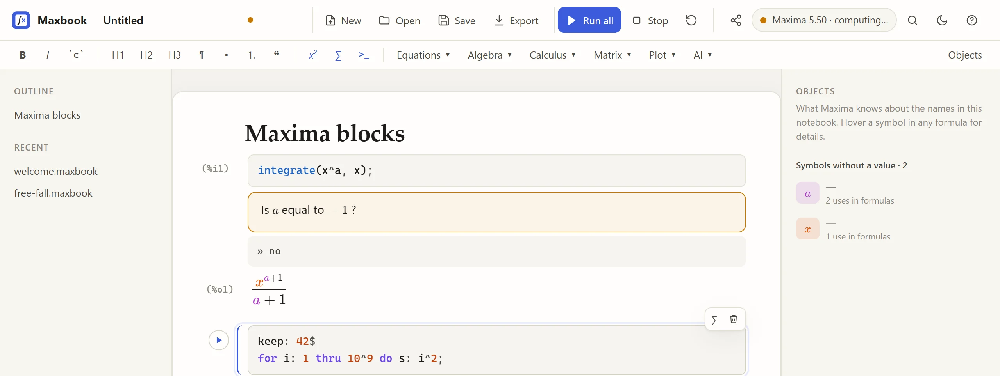
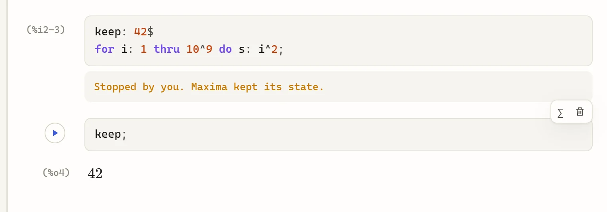
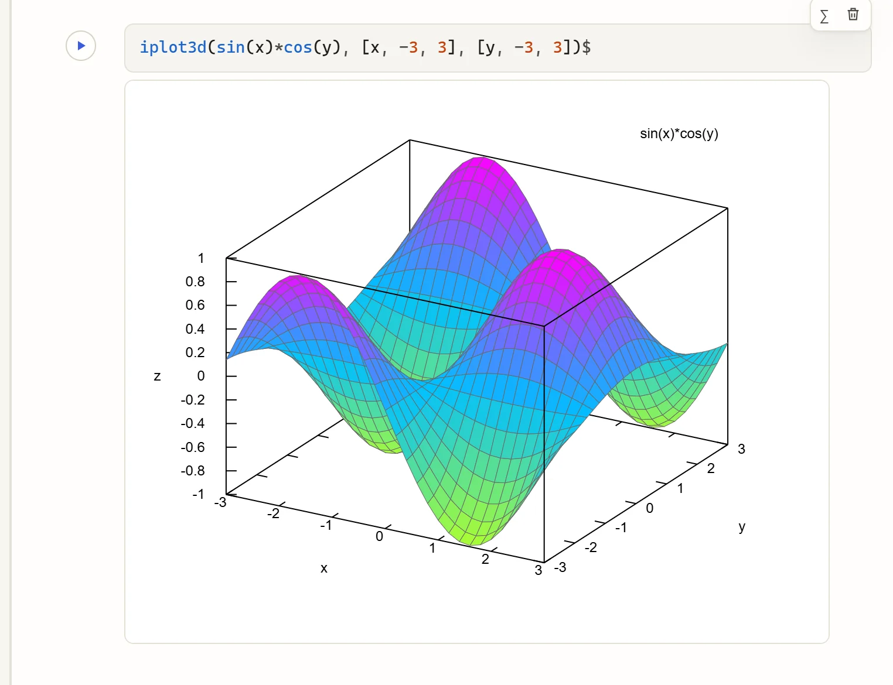

Maxima blocks, plots and questions
A Maxima block holds ordinary Maxima input, exactly what you would type at a Maxima prompt or in a wxMaxima input cell.
Creating and running blocks
Make a block with any of:
-
>>and a space at the start of an empty line, -
```and a space (or```maxima), -
Ctrl+Alt+M, or the
>_button in the format bar.
Then run it:
Shift+Enter |
Run, and move to the text after the block. |
Ctrl+Enter |
Run, and stay in the block. |
Alt+Enter |
Run, and insert a new block below. |
▶ in the margin |
Run (shown when you point at the block). |
Statements run one at a time, as in a Maxima session: a statement ending in ; shows its result, one ending in $ runs silently, and the block stops at the first error.
The margin shows the input labels (%i5, or %i3–4 for several statements) and each result its %o label, so %, %o4 and everything you define work across the whole notebook.
Inside a block, Tab indents, Esc selects the whole block (then Delete removes it, Enter goes back in), and the arrow keys at the first or last line move out into the text. Pointing at a result shows LaTeX and Maxima buttons that copy it in either form.
When Maxima asks a question
Some computations depend on facts Maxima does not know, such as the sign of a parameter. Maxima then asks, and the question appears in the block:

Click one of the suggested answers or type your own (for example positive) and press Enter.
The computation continues with your answer:

To avoid the question next time, tell Maxima beforehand, for example assume(a > 0)$ or declare(n, integer)$.
Stopping a long computation
While Maxima works, the block shows [*] and the pill at the top says computing…:

Click Stop (the square button). Maxima abandons the computation but keeps everything defined so far:

If Maxima does not react within a few seconds (some long-running library code cannot be interrupted), Maxbook restarts it and the block says that earlier definitions are gone. Restart (the circular arrow) always starts a fresh Maxima; use it when you want a clean session. Stop while Maxima asks a question also works.
Plots in the notebook
|
like |
|
like |
|
like |
|
aliases, so wxMaxima worksheets run unchanged |
iplot3d(sin(x)*cos(y), [x, -3, 3], [y, -3, 3])$
Plots are SVG images made by gnuplot, so they stay sharp when you zoom or print.
The ordinary plot2d and draw2d still open gnuplot’s own window, as they do in Maxima.
End plot commands with $: the plot itself is the output, and the command’s return value is not interesting.
|